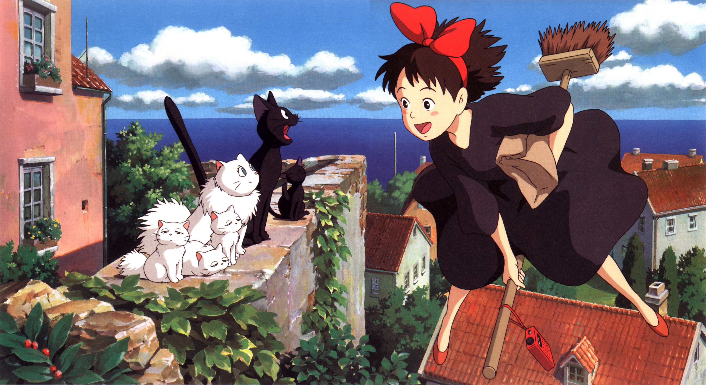

Kiki è una giovane strega che come da tradizione, compiuti i 13 anni parte da casa sulla sua scopa in compagnia soltanto di Jiji, il suo gatto nero, per l'anno di noviziato da svolgere in un'altra città. Dopo aver superato una tempesta ed aver incontrato un'altra giovane strega ormai al termine del suo tirocinio, Kiki raggiunge una caratteristica cittadina di mare, meta prefissata nell'immaginario della ragazzina fin dalla sua partenza. Le prime esperienze in città, per lei, che dopotutto è una ragazza di campagna, non sono però positive e Kiki, scossa dall'accoglienza piuttosto fredda e deludente del luogo, si rende conto che forse aveva fin troppo idealizzato quell'avventura tanto attesa da piccola e che probabilmente quella città non era il posto giusto in cui fermarsi. Fortunatamente si imbatte nella gentile Osono, una giovane fornaia che in cambio di un aiuto nel suo negozio le offre un alloggio in cui abitare. Kiki può finalmente mettere a frutto l'unica arte magica che possiede, quella di saper volare sulla scopa, e apre una piccola attività di consegne volanti di pacchi. Kiki comincia quindi ad inserirsi nel tessuto della cittadina e impara lentamente a distinguere il lato buono che in fondo c'è in tutte le persone. Durante questa sua lenta maturazione, Kiki è talvolta euforica e talvolta depressa con repentini sbalzi di umore, e ne fa le spese il povero Tombo, un ragazzo di città affascinato dal volo, suo coetaneo e suo primo vero amico, che non sempre riesce a capire il carattere difficile della ragazza. Un giorno però accade un evento apparentemente inspiegabile: la capacità di volare, che Kiki possedeva fin da bambina, sembra svanita, così come quella di capire le parole di Jiji. Kiki è disperata e solo allora comincia a rendersi conto di cosa veramente rappresenti l'anno di noviziato: riuscire a trasformare le proprie attitudini e il proprio talento di bambina nell'attività da svolgere da adulti. Qualora avesse fallito, lei non avrebbe avuto più alcun valore. Con l'aiuto di Ursula, una sua amica pittrice conosciuta durante una consegna, capisce però che la perdita dell'ispirazione o la paura di non essere in grado di svolgere il proprio compito è una cosa naturale e che solo riuscendo a superare questi momenti di sconforto si può crescere e maturare. Improvvisamente per televisione viene trasmesso un servizio in diretta: un dirigibile ancorato presso la cittadina ha rotto gli ormeggi a causa del forte vento ed è in balia della tempesta. Kiki si rende conto che il suo amico Tombo era salito proprio su quel dirigibile e ora era rimasto aggrappato ad una fune fuoribordo. Mentre il dirigibile viaggia senza controllo sui tetti della città, Kiki riesce a superare il blocco psicologico che non le permetteva più di volare e a cavallo di uno spazzolone finalmente si libra nell'aria per salvare il suo amico. Dopo il salvataggio, Kiki oltre a conquistare il cuore dei cittadini riacquista la fiducia in se stessa, riprende a fare le consegne a domicilio e scrive una lettera ai suoi genitori, informandoli che lei e Jiji sono felici.